HICO & HICO-DET
Benchmarks for Recognizing Human-Object Interactions in Images
Introduction
We introduce two new benchmarks for classifying and detecting human-object interactions (HOI) in images:
- HICO (Humans Interacting with Common Objects)
- HICO-DET
Key features:
- A diverse set of interactions with common object categories
- A list of well-defined, sense-based HOI categories
- An exhaustive labeling of co-occurring interactions with an object category in each image
- The annotation of each HOI instance (i.e. a human and an object bounding box with an interaction class label) in all images
Tasks
Task 1: HOI Classification
The input is an image and the output is a set of binary labels, each representing the presence or absense of an HOI class.
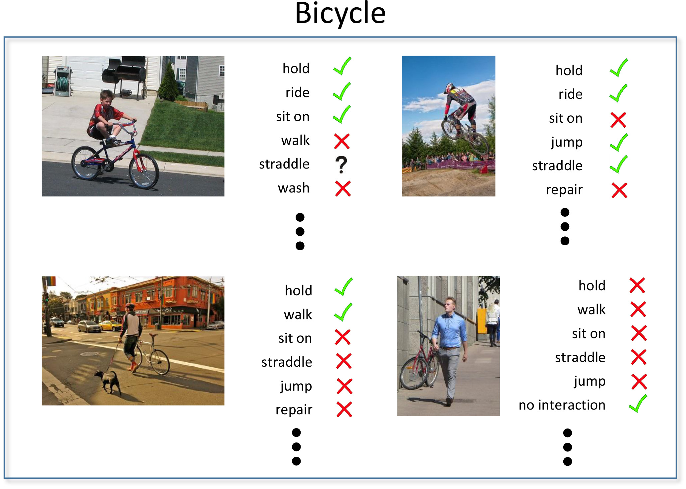
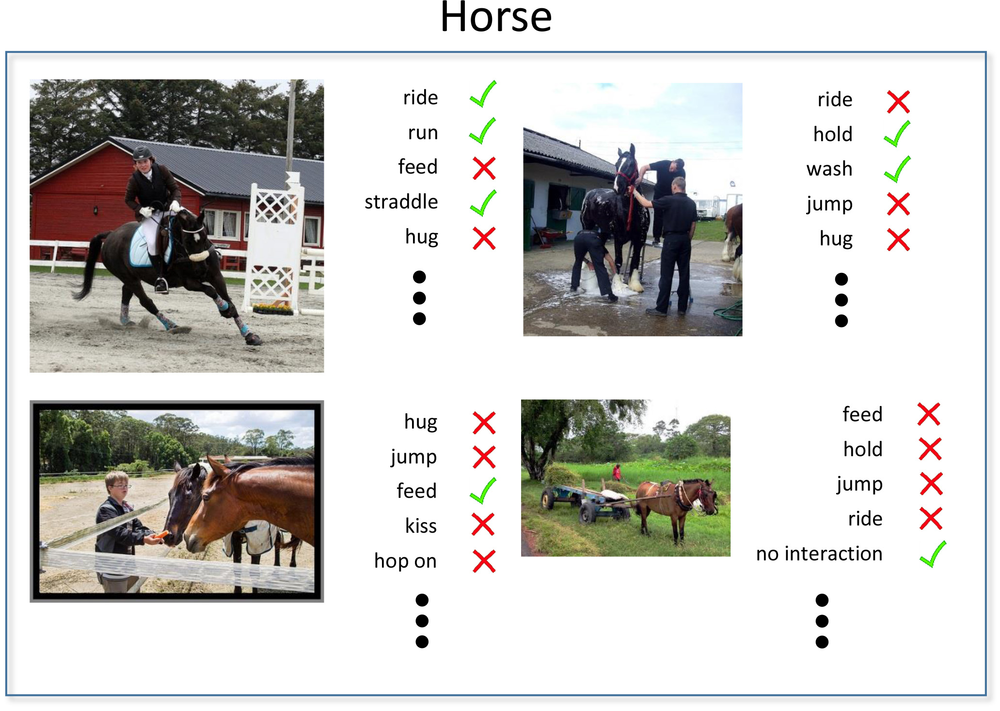
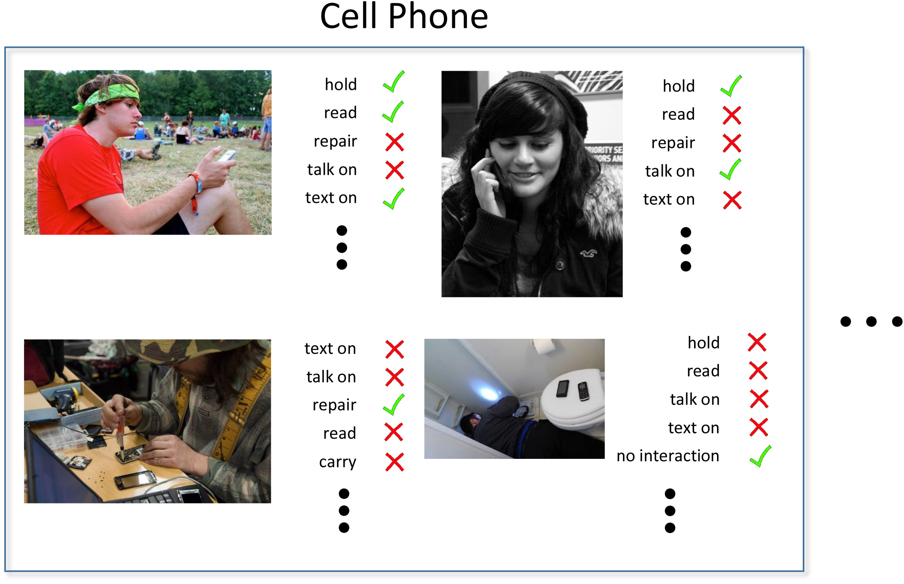
Sample annotations in the HICO benchmark
Sample annotations in the HICO-DET benchmark
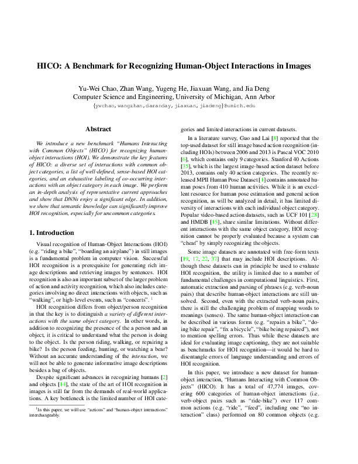
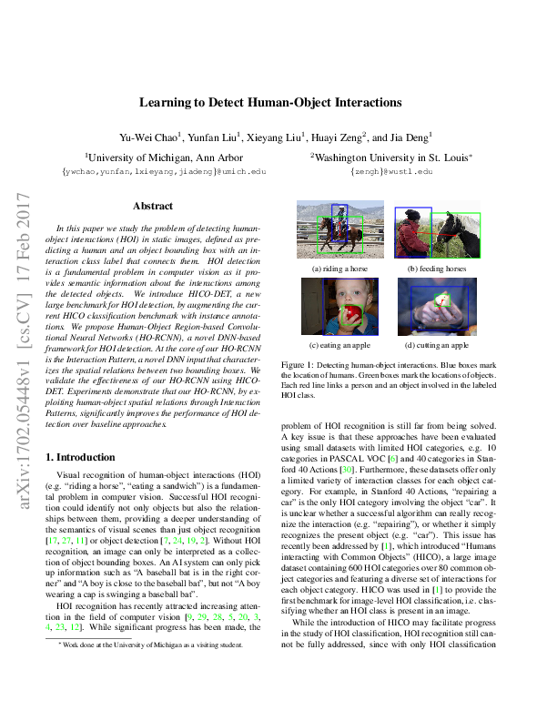


Last updated on 2017/11/30
Sample annotations in the HICO benchmark
Task 2: HOI Detection
The input is an image and the output is a set of bounding box pairs, each localizes a human plus an object and predicts an HOI class label.
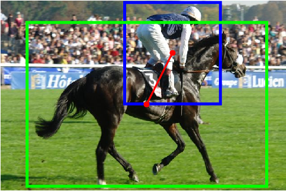
Riding a horse
Riding a horse
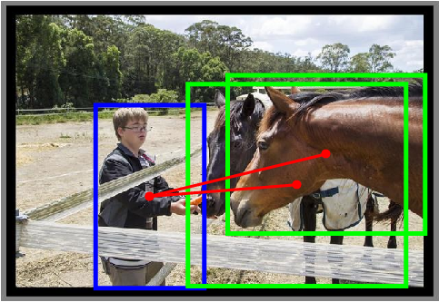
Feeding a horse
Feeding a horse
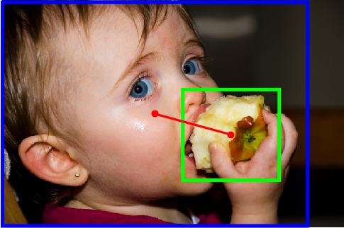
Eating an apple
Eating an apple
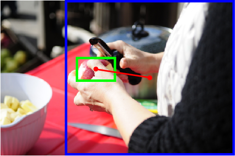
Cutting an apple
Cutting an apple
Sample annotations in the HICO-DET benchmark
Paper
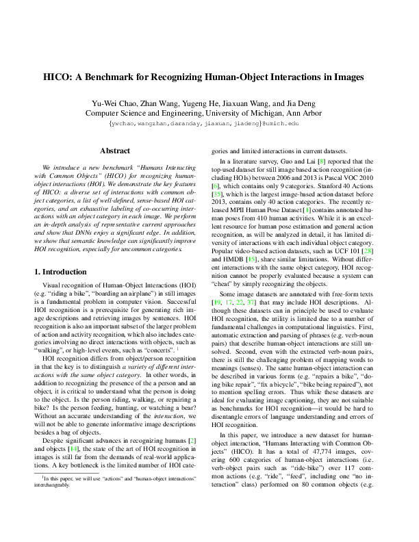
Yu-Wei Chao, Zhan Wang, Yugeng He, Jiaxuan Wang, and Jia Deng.
HICO: A Benchmark for Recognizing Human-Object Interactions in Images.
IEEE International Conference on Computer Vision (ICCV), 2015.
[pdf] [supplementary material] [poster] [bibtex]
HICO: A Benchmark for Recognizing Human-Object Interactions in Images.
IEEE International Conference on Computer Vision (ICCV), 2015.
[pdf] [supplementary material] [poster] [bibtex]
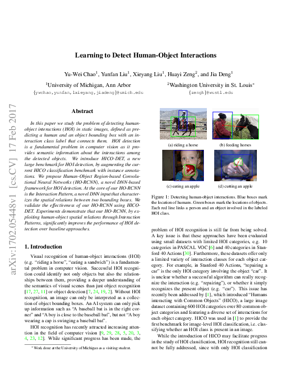
Yu-Wei Chao, Yunfan Liu, Xieyang Liu, Huayi Zeng, and Jia Deng.
Learning to Detect Human-Object Interactions.
IEEE Winter Conference on Applications of Computer Vision (WACV), 2018.
[pdf] [supplementary material] [arXiv] [poster] [bibtex]
Learning to Detect Human-Object Interactions.
IEEE Winter Conference on Applications of Computer Vision (WACV), 2018.
[pdf] [supplementary material] [arXiv] [poster] [bibtex]
Dataset
HICO version 20150920 7.5GB
Images and annotations for the HOI classification task.
Images and annotations for the HOI classification task.
HICO-DET version 20160224 7.5GB
Images and annotations for the HOI detection task.
Images and annotations for the HOI detection task.
Note:
- HICO and HICO-DET share the same set of HOI categories.
- HICO-DET is a superset of HICO in terms of the image set.
Source Code
hico_benchmark
Source code for reproducing the empirical results in the ICCV 2015 paper.
Source code for reproducing the empirical results in the ICCV 2015 paper.
ho-rcnn
Source code for reproducing the empirical results in the WACV 2018 paper.
Source code for reproducing the empirical results in the WACV 2018 paper.
hoi-det-ui
Annotation UI for HOI detection.
Annotation UI for HOI detection.
Video Spotlight
People
Contact
Send any comments or questions to Yu-Wei Chao: ywchao@umich.edu.
Last updated on 2017/11/30